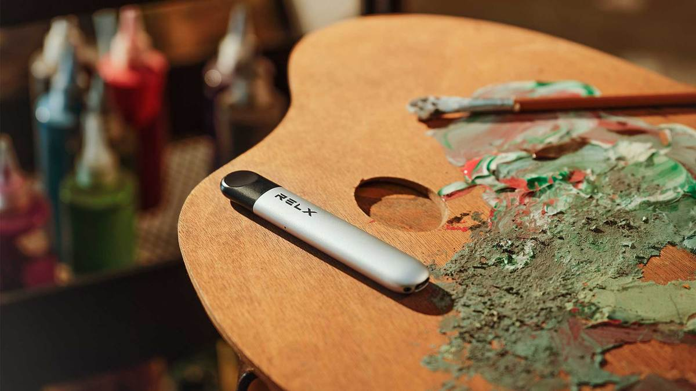

傳統的香煙是通過燃燒的時候會產生煙，這樣的煙含有大量有害物質，焦油成分會危害身體，煙味濃鬱；電子煙是通過電子加熱煙彈產生含有煙油的蒸汽，煙彈所使用的煙油主要由水、食品級香精、尼古丁、丙二醇（PG）、植物甘油（VG）構成。那麼不管是傳統的香煙還是電子煙，都含有尼古丁等煙油物質，吸煙對於身體的健康是有害的，電子煙是幫助煙民更好的戒菸，讓戒菸不那麼痛苦，不抽煙養成良好的生活習慣。
那麼，食品級香精，尼古丁，丙二醇（PG），植物甘油（VG）這些物質是什麼呢？對於身體影響如何？
第一：丙二醇（PG）
丙二醇是煙彈煙油的主要成分之一，它是一種人造化學物質，它的作用是讓香精可以在煙油中均勻分佈，讓味道嘗起來更可口。丙二醇具有淡淡的清香甜口，但是它並不用作做煙油中的甜味劑，它是一種保濕劑，無色無味，也被用來增強煙油的口味。丙二醇的用處廣泛，還被用於藥品和食品，以保持它們的濕潤。電子煙煙彈的煙油中的丙二醇可以提升口味，它使你在抽完一口電子煙後，可以在喉嚨後面留下強烈的餘香，丙二醇被用於菸油中，由於它是一種稀薄的液體，所以它使重新灌油進霧化器不那麼困難。
第二：植物甘油（VG）
與丙二醇一樣，植物甘油（VG）是一種安全、無色、也無異味的液體。它帶有淡淡的甜味，和丙二醇完全不同的地方是，植物甘油特別濃厚，植物甘油同樣是食品行業中作為甜味劑的一個組成部分，它還被用在各種藥品中。高植物甘油的煙油可以抽出巨大的煙霧，也會產生更強烈的擊喉感，但是它提供較少的口味強度，它的缺點是它會在霧化芯上堆積，而且還需要更多的電子煙設備瓦數來達到理想的溫度，以達到最好的霧化效果。總體而言，植物甘油（VG）一般來說是安全的，但是如果對植物甘油過敏的人來說，還是不要輕易的嘗試。
第三：尼古丁
尼古丁相信很多人都不陌生了，傳統的香煙燃燒的時候會產生很多的尼古丁物質，在電子煙的煙油裡，大多數煙油會選擇添加尼古丁，RELX品牌所有的口味的煙油都含有一定含量的尼古丁。尼古丁可以從煙草中提取或是人工合成，尼古丁增強了煙油的味道，滿足了煙民在不使用煙草葉的情況下的尼古丁需求。當然，尼古丁仍然是可以成癮的，國際健康權威機構英國公共衛生局進行的獨立研究發現，比起傳統香煙，電子煙至少要更安全95％，直接吸入香煙的煙會可以造成長期傷害，如癌症。吸煙者可以利用RELX電子煙戒菸，那樣會更加的容易戒菸，煙彈的煙油中的尼古丁含量是可以變化的，有多重不一樣的含量，並且多口味可以選擇。煙油中的尼古丁是以毫克或以體積的百分比來確定的，作為一個例子，3毫克的尼古丁水平與0.3%的尼古丁相吻合。煙油中尼古丁的含量必須精確分類，當你需要尼古丁時，你也有各種尼古丁含量的不同選擇，盡量少吸食尼古丁，對於戒菸有很好的幫助。
第四：食品級香精
市場上的電子煙彈裡的煙油，一般來說，香精佔煙油總體積的1% 至10%，香精的作用可想而知，就是讓煙油有各種各樣的口味供你選擇，香精不需要太多，電子煙的配方和比例也類似於基本的食品製作，為了達到理想的效果，需要反複測試，仔細調整，以及在實驗室中正確的混合。

以上就是關於食品級香精，尼古丁，丙二醇（PG），植物甘油（VG）這些物質的介紹，那麼，電子煙對人體的危害如何呢？
RELX電子煙的危害
市場上很多電子質量參次不齊，一般來說主要是煙油的質量會直接影響身體的健康，目前使用RELX電子煙最主要的危險是未知的威脅，因為目前我們研究電子煙的時間還不夠長，所以還無法確定長期使用電子煙的危險，但可以確認的是電子煙的危險性肯定比吸煙的危險性小得多。對於那些常年吸煙的人來說，改用RELX電子煙是可以大大降低健康風險，但是請記住，電子煙是幫您戒菸的，電子煙也不能吸食過量，可以選擇低尼古丁的電子煙，慢慢降低對尼古丁的依賴，然後逐步脫離依賴戒菸，養成良好的生活習慣。
RELX煙彈在哪裡買？
我們是RELX台灣網上代理專賣店，我們販售RELX電子煙的新手套餐、主機、煙彈，甚至是RELX的周邊裝飾等商品。在這裡，你不僅能買到 100% 正品RELX電子煙主機和煙彈，還能買到價格更加實惠，並且保證質量的RELX通用主機和RELX通用煙彈/煙彈。我們將用最實惠的價格展現最全面的產品，給予最貼心的售後，給在台灣的你最愉快的購物體驗。所以，選擇悅刻電子煙，煙彈，不要猶豫，按下加入購物車，為你將要到來的時尚和愉快下單，早日戒菸。